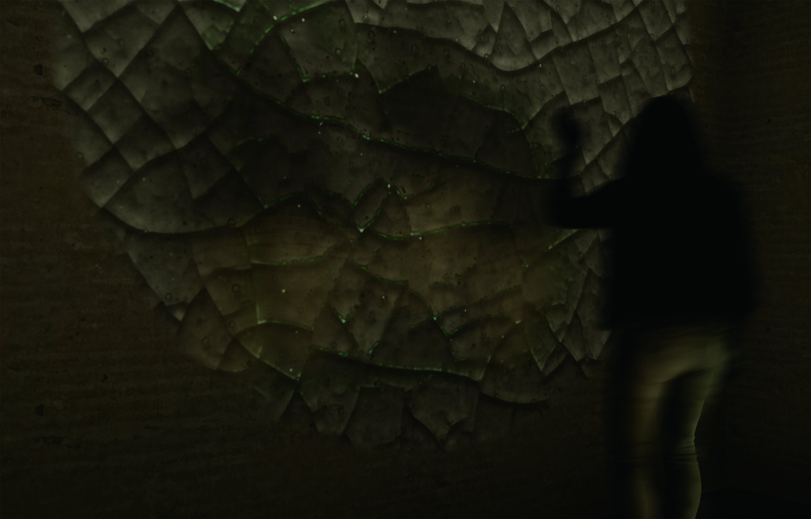

2025
SIGGRAPH 2025 Vancouver

Achievement
論文入選藝術論文(Art Paper)並刊登於期刊
Art Paper accepted for presentation and publication in the PACM-CGIT Journal.
Title
Digital Crazing: Applying Quadtree Structures to Simulate Time and Human Intervention
Author
呂思函(發表人)、周小淨
Szu-Han Lu(Presenter), Hsiao-Ching Chou
2025 臺北數位圖像國際學術研討會《智慧視界》

Achievement
論文入選新媒體/跨域領域，榮獲優良論文
Shortlisted in New Media / Cross-domain, won the Best Paper Award.
Title
痕跡數位開片:探索時間性與使用者介入的四元樹結構應用
Title: Digital Crazing of Traces: Exploring th Application of Quadtree Structure in Time and User Intervention
Author
呂思函(發表人)、周小淨
Szu-Han Lu(Presenter), Hsiao-Ching Chou
2023
Unreal Engine
Point Cloud Workshop
Instructors
授課教師：周小淨 / 呂思函
Hsiao-Ching Chou, Szu-Han Lu
Course Overview
This course introduces students to UE and incorporates point cloud applications as practical projects.